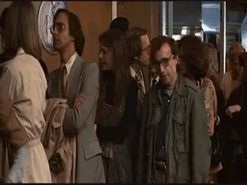

Vol.28 / Master of Comedy
ウディ・アレン：
都市と神経症の喜劇
2026.05.24 UP
🎬 特設データベース「THE WOODY INDEX」
ウディ・アレン監督の膨大な作品群をアーカイブした特設データベースをご用意しました。年代順や「神経症度（Neuroticism）」によるソート、撮影ロケーション別のフィルタリングが可能です。
◎ 監督経歴：ニューヨークを愛した異端の喜劇作家
ウディ・アレン（Woody Allen）は1935年生まれ。スタンダップコメディアンやテレビの放送作家を経て映画監督に。一貫して「死」「セックス」「宗教」といった哲学的なテーマを、神経症的なおしゃべりとシニカルなユーモアで包み込みます。
初期はドタバタ喜劇が中心でしたが、『アニー・ホール』（1977年）でアカデミー賞作品賞・監督賞を受賞し、都会の男女の洗練されたロマンスと苦悩を描く作風を確立しました。また、年に1本のペースで映画を撮り続ける驚異的な多作ぶりでも知られています。
◎ 代表作ピックアップ

アニー・ホール (1977)
アカデミー賞4部門（作品賞・監督賞など）を受賞。第四の壁を破って観客に話しかける手法や、時系列をシャッフルする実験的な構成を用いたロマンティック・コメディの金字塔。
マンハッタン (1979)
ジョージ・ガーシュウィンの名曲『ラプソディ・イン・ブルー』に乗せて、ニューヨークの街並みを美しいモノクローム映像で捉えた作品。都会の孤独と知識人たちの滑稽な恋愛模様を描く。
ミッドナイト・イン・パリ (2011)
1920年代のパリへタイムスリップした売れない作家が、ヘミングウェイやピカソ、ダリといった憧れの芸術家たちと交流する幻想的なロマンティック・コメディ。アレン最大のヒット作。
世界中がアイ・ラヴ・ユー (1996)
ウディ・アレン初の本格ミュージカル。ニューヨーク、パリ、ヴェネツィアを舞台に、豪華キャストが歌い踊りながら複雑な恋愛模様を軽快に繰り広げるロマンティック・コメディ。
◎ フィルモグラフィー
- No.01 泥棒野郎 (1969)
- No.02 バナナ (1971)
- No.03 性の本 (1972)
- No.04 スリーパー (1973)
- No.05 愛と死 (1975)
-
No.06 アニー・ホール (1977)
★アカデミー賞 作品賞・監督賞・脚本賞・主演女優賞 受賞
- No.07 インテリア (1978)
- No.08 マンハッタン (1979)
- No.09 スターダスト・メモリー (1980)
- No.10 サマー・ナイト・セクシィ・コメディ (1982)
- No.11 カメレオンマン (1983)
- No.12 ブロードウェイのダニー・ローズ (1984)
-
No.13 カイロの紫のバラ (1985)
- カンヌ国際映画祭 批評家連盟賞 受賞
-
No.14 ハンナとその姉妹 (1986)
★アカデミー賞 助演男優賞・助演女優賞・脚本賞 受賞
- No.15 ラジオ・デイズ (1987)
- No.16 セプテンバー (1987)
- No.17 私の中のもうひとりの私 (1988)
- No.18 ウディ・アレンの重罪と軽罪 (1989)
- No.19 アリス (1990)
- No.20 影と霧 (1991)
- No.21 夫たち、妻たち (1992)
- No.22 マンハッタン殺人ミステリー (1993)
-
No.23 ブロードウェイと銃弾 (1994)
★アカデミー賞 助演女優賞 受賞
-
No.24 誘惑のアフロディーテ (1995)
★アカデミー賞 助演女優賞 受賞
- No.25 世界中がアイ・ラヴ・ユー (1996)
- No.26 地球は女で回ってる (1997)
- No.27 セレブリティ (1998)
- No.28 ギター弾きの恋 (1999)
- No.29 おいしい生活 (2000)
- No.30 スコルピオン・キッド (2001)
- No.31 さよなら、さよならハリウッド (2002)
- No.32 僕のニューヨークライフ (2003)
- No.33 メリンダとメリンダ (2004)
- No.34 マッチポイント (2005)
- No.35 タロットカード殺人事件 (2006)
- No.36 ウディ・アレンの夢と犯罪 (2007)
-
No.37 それでも恋するバルセロナ (2008)
★アカデミー賞 助演女優賞 受賞
- No.38 人生万歳! (2009)
- No.39 恋のロンドン狂騒曲 (2010)
-
No.40 ミッドナイト・イン・パリ (2011)
★アカデミー賞 脚本賞 受賞
- No.41 ローマでアモーレ (2012)
-
No.42 ブルージャスミン (2013)
★アカデミー賞 主演女優賞 受賞
- No.43 マジック・イン・ムーンライト (2014)
- No.44 教授のおかしな妄想殺人 (2015)
- No.45 カフェ・ソサエティ (2016)
- No.46 女と男の観覧車 (2017)
- No.47 レイニーデイ・イン・ニューヨーク (2019)
- No.48 フェスティバル・リフキン (2020)
- No.49 Coup de chance (2023)